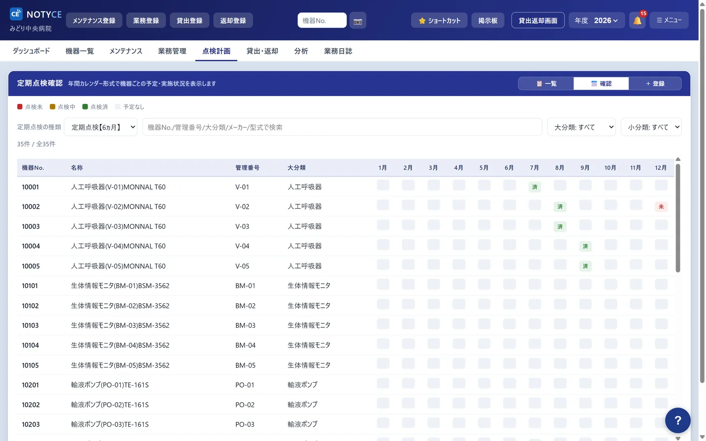
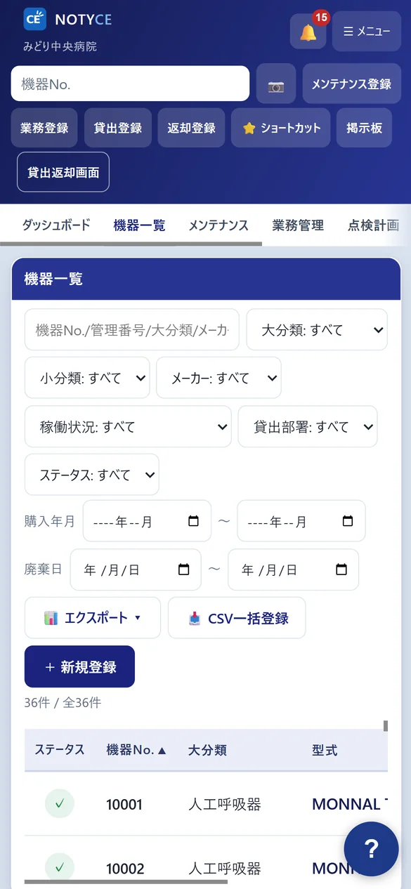
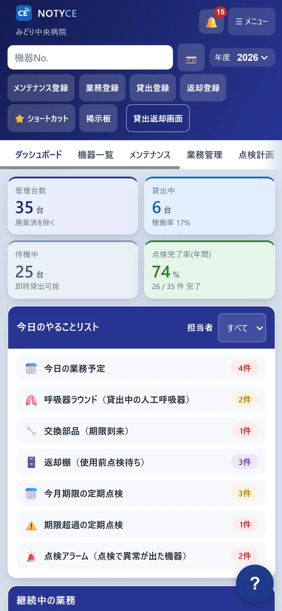
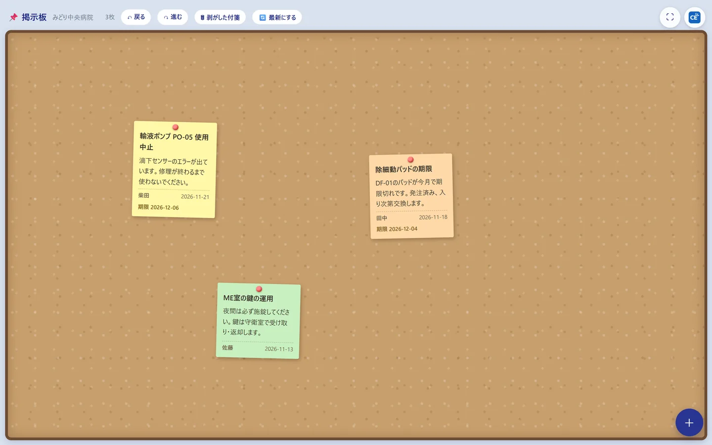
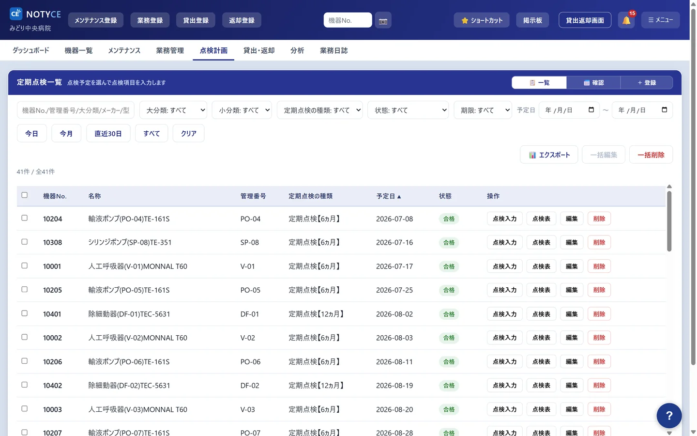
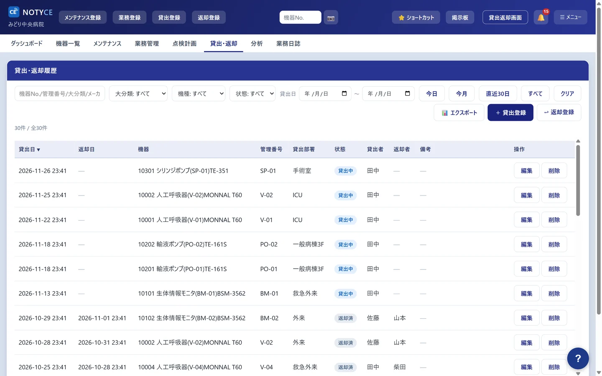
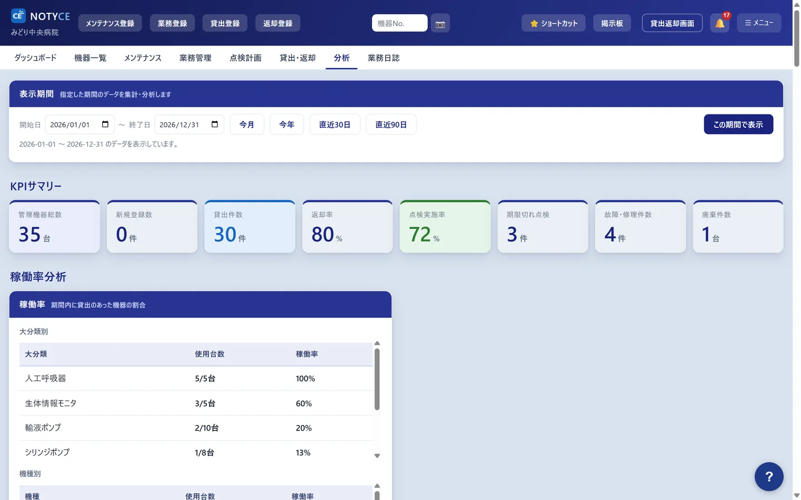

FEATURE 01
気づける
機器台帳と点検計画を一元管理
機器を台帳化し、定期点検の予定を月単位で管理。点検期限や機器の状態が埋もれず、QRコードから点検入力もスムーズです。


NOTYCEは、医療機器の点検・修理・貸出・返却・保守・台帳管理を一元化するクラウドシステムです。機器ごとに履歴が時系列で残り、点検期限や対応状況が一目でわかります。
一人の“気づき”を個人で抱えず、必要な人へ共有することで、医療機器管理を「もっと簡単に、もっと安全に」します。初期設定・データ移行・運用サポートは業務委託で代行します。


ダッシュボード：今日の業務予定・返却棚・今月期限の点検・期限超過の点検・点検で異常が出た機器などが、件数つきで一覧になります。
※ 画面はデモ用の架空データで撮影しています。施設名・数値は実在のものではありません。
「気づける」「つながる」「守る」の3つで、医療機器管理を支えます。
機器を台帳化し、定期点検の予定を月単位で管理。点検期限や機器の状態が埋もれず、QRコードから点検入力もスムーズです。


点検・故障修理・貸出返却・消耗品アラート・写真撮影をその場で記録。業務予定はカレンダーで色分けし、やりかけの仕事も「対応中／返答待ち」で見える化。情報が必要な人へ届きます。


施設ごとにデータを分離し、権限（管理者／一般／閲覧のみ）と2段階認証で保護。毎日自動でバックアップを取り、復元できることも確認しています。国際基準（ISO/IEC 27001）の管理策に沿って設計・運用しています。導入から月次フォローまで伴走します。
※ 画面はデモ用の架空データで撮影しています。施設名・数値は実在のものではありません。
※ ISO/IEC 27001 の管理策を参考に設計・運用しているもので、第三者認証を取得しているものではありません。
実際の画面です。PCでもスマホでも同じ内容を確認・入力できます。




※ 画面はデモ用の架空データで撮影しています。画面に表示される施設名・機器の台数・数値は実在のものではありません。
初期設定から本稼働後まで、私たちが伴走します。
機器台数・運用のしかたを確認します。
私たちが代行し、すぐ使える状態にします。
台帳の写真からまとめて取り込むこともできます。
現場で試していただき、微調整します。
導入後も伴走し、改善のご要望も反映します。